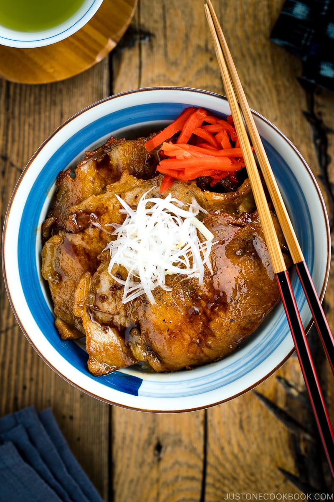

Butadon - Japanese pork rice bowl

Buta (pork) and don (bowl) is a Japanese staple. Using common ingredients and displaying a good variety of japanese cooking techniques, this hearty bowl is the perfect introduction to Japanese Cooking.
Ingredients
For the sauce
- Soy Sauce - Kikkoman is the go-to
- Sugar - brown sugar for the best results
- Grated ginger
- Sesame oil
- Mirin or Sake
For the meat
- Potato Starch (Katakuriko) or flour
- Pork (typically, Rosu is used in Japan, but any thin cut pork can work as long as it's not too fatty)
- Half a medium sized onion
For the garnish
- Negi (Green onion)
- Sesame seed
- An egg
- Vinegar (White vinger or rice Vinegar)
Preparation
- Start by mixing the soy sauce, mirin, sugar and sesame oil in a bowl. Add a pinch of ginger, but not enough to make the whole thing taste like ginger
- Season the pork lightly with a sprinkle of salt and black pepper. Coat in the potato starch
- Slice the onion. You want long, thin strips for the regular onion. For the green onion, finely dice the white part, and reserve the green part for garnish.
- To poach the egg - fill a saucepan with water and bring to the boil. Add a splash of vinegar. Once the water reaches a boil, reduce to a simmer. Crack the egg into a ramekin or small bowl. Now use a spoon or other utensil to spin the water into a spiral and drop the egg into the center. Poach for around 90 seconds or until the white has fully set. Remove and rest in a bowl
- Add sesame oil to a frying pan on medium heat. Add the pork and fry until the pork is brown, with crispy edges. Remove the pork and add the onion and green onion. Add the sauce and sautee until the onion is transparent
- Add the pork back into the pan, add a splash of water and cook for a few minutes until the save has reduced
- Add the cooked pork to a bowl of steamed rice. Top with onions, poached egg and sesame seeds. Garnish with green onion. For an added kick, sprinkle chili powder on
Back to home page